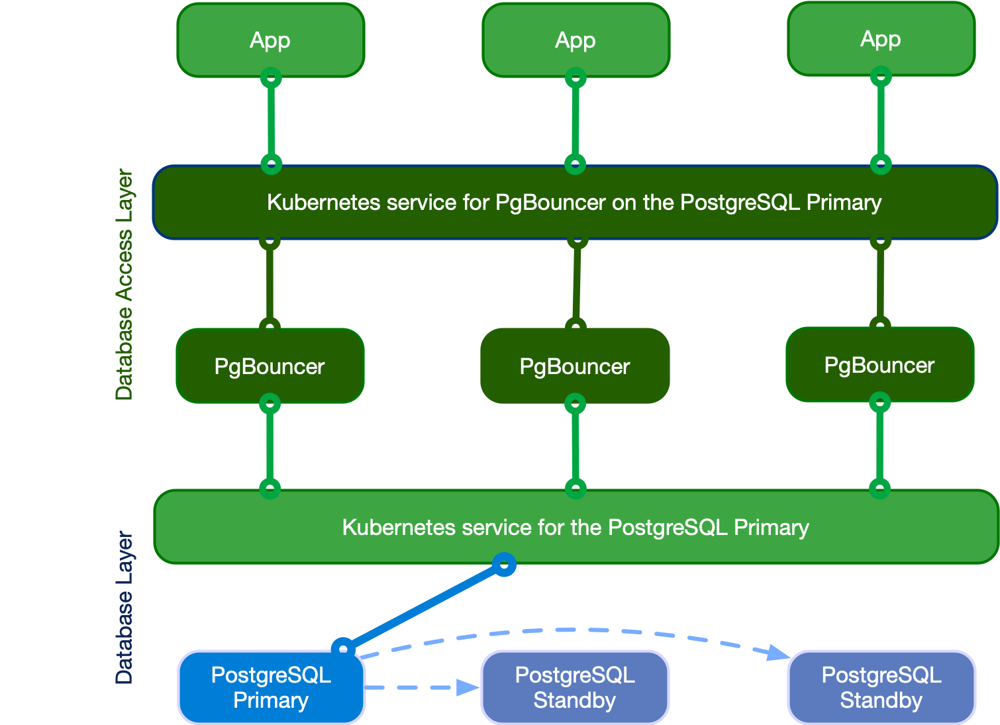

Connection pooling
CloudNativePG provides native support for connection pooling with
PgBouncer, one of the most popular open source
connection poolers for PostgreSQL, through the Pooler custom resource definition (CRD).
In brief, a pooler in CloudNativePG is a deployment of PgBouncer pods that sits
between your applications and a PostgreSQL service, for example, the rw
service. It creates a separate, scalable, configurable, and highly available
database access layer.
Architecture
The following diagram highlights how introducing a database access layer based on PgBouncer changes the architecture of CloudNativePG. Instead of directly connecting to the PostgreSQL primary service, applications can connect to the equivalent service for PgBouncer. This ability enables reuse of existing connections for faster performance and better resource management on the PostgreSQL side.

Quick start
This example helps to show how CloudNativePG implements a PgBouncer pooler:
apiVersion: postgresql.cnpg.io/v1
kind: Pooler
metadata:
name: pooler-example-rw
spec:
cluster:
name: cluster-example
instances: 3
type: rw
pgbouncer:
poolMode: session
parameters:
max_client_conn: "1000"
default_pool_size: "10"
Important
The pooler name can't be the same as any cluster name in the same namespace.
This example creates a Pooler resource called pooler-example-rw
that's strictly associated with the Postgres Cluster resource called
cluster-example. It points to the primary, identified by the read/write
service (rw, therefore cluster-example-rw).
The Pooler resource must live in the same namespace as the Postgres cluster.
It consists of a Kubernetes deployment of 3 pods running the
latest stable image of PgBouncer,
configured with the session pooling mode
and accepting up to 1000 connections each. The default pool size is 10
user/database pairs toward PostgreSQL.
Important
The Pooler resource sets only the * fallback database in PgBouncer. This setting means that
that all parameters in the connection strings passed from the client are
relayed to the PostgreSQL server. For details, see "Section [databases]"
in the PgBouncer documentation.
CloudNativePG also creates a secret with the same name as the pooler containing the configuration files used with PgBouncer.
API reference
For details, see PgBouncerSpec
in the API reference.
Pooler resource lifecycle
Pooler resources aren't cluster-managed resources. You create poolers
manually when they're needed. You can also deploy multiple poolers per
PostgreSQL cluster.
What's important is that the life cycles of the Cluster and the Pooler
resources are currently independent. Deleting the cluster doesn't imply the
deletion of the pooler, and vice versa.
Important
Once you know how a pooler works, you have full freedom in terms of possible architectures. You can have clusters without poolers, clusters with a single pooler, or clusters with several poolers, that is, one per application.
Security
Any PgBouncer pooler is transparently integrated with CloudNativePG support for in-transit encryption by way of TLS connections, both on the client (application) and server (PostgreSQL) side of the pool.
Specifically, PgBouncer reuses the certificates of the PostgreSQL server. It
also uses TLS client certificate authentication to connect to the PostgreSQL
server to run the auth_query for clients' password authentication (see
Authentication).
Containers run as the pgbouncer system user, and access to the pgbouncer
database is allowed only by way of local connections, through peer authentication.
Certificates
By default, a PgBouncer pooler uses the same certificates that are used by the cluster. However, if you provide those certificates, the pooler accepts secrets with the following formats:
- Basic Auth
- TLS
- Opaque
In the Opaque case, it looks for the following specific keys that need to be used:
- tls.crt
- tls.key
So you can treat this secret as a TLS secret, and start from there.
Authentication
Password-based authentication is the only supported method for clients of PgBouncer in CloudNativePG.
Internally, the implementation relies on PgBouncer's auth_user and
auth_query options. Specifically, the operator:
- Creates a standard user called
cnpg_pooler_pgbouncerin the PostgreSQL server - Creates the lookup function in the
postgresdatabase and grants execution privileges to the cnpg_pooler_pgbouncer user (PoLA) - Issues a TLS certificate for this user
- Sets
cnpg_pooler_pgbounceras theauth_user - Configures PgBouncer to use the TLS certificate to authenticate
cnpg_pooler_pgbounceragainst the PostgreSQL server - Removes all the above when it detects that a cluster doesn't have any pooler associated to it
Important
If you specify your own secrets, the operator doesn't automatically integrate the pooler.
To manually integrate the pooler, if you specified your own secrets, you must run the following queries from inside your cluster.
First, you must create the role:
CREATE ROLE cnpg_pooler_pgbouncer WITH LOGIN;
Then, for each application database, grant the permission for
cnpg_pooler_pgbouncer to connect to it:
GRANT CONNECT ON DATABASE { database name here } TO cnpg_pooler_pgbouncer;
Finally, as a superuser connect in each application database, and then create the authentication function inside each of the application databases:
CREATE OR REPLACE FUNCTION public.user_search(uname TEXT)
RETURNS TABLE (usename name, passwd text)
LANGUAGE sql SECURITY DEFINER AS
'SELECT usename, passwd FROM pg_catalog.pg_shadow WHERE usename=$1;';
REVOKE ALL ON FUNCTION public.user_search(text)
FROM public;
GRANT EXECUTE ON FUNCTION public.user_search(text)
TO cnpg_pooler_pgbouncer;
Important
Given that user_search is a SECURITY DEFINER function, you need to
create it through a role with SUPERUSER privileges, such as the postgres
user.
Pod templates
You can take advantage of pod templates specification in the template
section of a Pooler resource. For details, see
PoolerSpec in the API reference.
Using templates, you can configure pods as you like, including fine control
over affinity and anti-affinity rules for pods and nodes. By default,
containers use images from ghcr.io/cloudnative-pg/pgbouncer.
This example shows Pooler specifying `PodAntiAffinity``:
apiVersion: postgresql.cnpg.io/v1
kind: Pooler
metadata:
name: pooler-example-rw
spec:
cluster:
name: cluster-example
instances: 3
type: rw
template:
metadata:
labels:
app: pooler
spec:
containers: []
affinity:
podAntiAffinity:
requiredDuringSchedulingIgnoredDuringExecution:
- labelSelector:
matchExpressions:
- key: app
operator: In
values:
- pooler
topologyKey: "kubernetes.io/hostname"
Note
Explicitly set .spec.template.spec.containers to [] when not modified,
as it's a required field for a PodSpec. If .spec.template.spec.containers
isn't set, the Kubernetes api-server returns the following error when trying to
apply the manifest:error validating "pooler.yaml": error validating data:
ValidationError(Pooler.spec.template.spec): missing required field
"containers"
This example sets resources and changes the used image:
apiVersion: postgresql.cnpg.io/v1
kind: Pooler
metadata:
name: pooler-example-rw
spec:
cluster:
name: cluster-example
instances: 3
type: rw
template:
metadata:
labels:
app: pooler
spec:
containers:
- name: pgbouncer
image: my-pgbouncer:latest
resources:
requests:
cpu: "0.1"
memory: 100Mi
limits:
cpu: "0.5"
memory: 500Mi
Service Template
Sometimes, your pooler will require some different labels, annotations, or even change
the type of the service, you can achieve that by using the serviceTemplate field:
apiVersion: postgresql.cnpg.io/v1
kind: Pooler
metadata:
name: pooler-example-rw
spec:
cluster:
name: cluster-example
instances: 3
type: rw
serviceTemplate:
metadata:
labels:
app: pooler
spec:
type: LoadBalancer
pgbouncer:
poolMode: session
parameters:
max_client_conn: "1000"
default_pool_size: "10"
High availability (HA)
Because of Kubernetes' deployments, you can configure your pooler to run on a
single instance or over multiple pods. The exposed service makes sure that your
clients are randomly distributed over the available pods running PgBouncer,
which then manages and reuses connections toward the underlying server (if
using the rw service) or servers (if using the ro service with multiple
replicas).
Warning
If your infrastructure spans multiple availability zones with high latency across them, be aware of network hops. Consider, for example, the case of your application running in zone 2, connecting to PgBouncer running in zone 3, and pointing to the PostgreSQL primary in zone 1.
PgBouncer configuration options
The operator manages most of the configuration options for PgBouncer, allowing you to modify only a subset of them.
Warning
You are responsible for correctly setting the value of each option, as the operator doesn't validate them.
These are the PgBouncer options you can customize, with links to the PgBouncer documentation for each parameter. Unless stated otherwise, the default values are the ones directly set by PgBouncer.
application_name_add_hostautodb_idle_timeoutclient_idle_timeoutclient_login_timeoutdefault_pool_sizedisable_pqexecidle_transaction_timeoutignore_startup_parameters: to be appended toextra_float_digits,options- required by CNPlog_connectionslog_disconnectionslog_pooler_errorslog_stats: by default disabled (0), given that statistics are already collected by the Prometheus export as described in the "Monitoring" section belowmax_client_connmax_db_connectionsmax_prepared_statementsmax_user_connectionsmin_pool_sizequery_timeoutquery_wait_timeoutreserve_pool_sizereserve_pool_timeoutserver_check_delayserver_check_queryserver_connect_timeoutserver_fast_closeserver_idle_timeoutserver_lifetimeserver_login_retryserver_reset_queryserver_reset_query_alwaysserver_round_robinstats_periodtcp_keepalivetcp_keepcnttcp_keepidletcp_keepintvltcp_user_timeoutverbose
Customizations of the PgBouncer configuration are written declaratively in the
.spec.pgbouncer.parameters map.
The operator reacts to the changes in the pooler specification, and every PgBouncer instance reloads the updated configuration without disrupting the service.
Warning
Every PgBouncer pod has the same configuration, aligned with the parameters in the specification. A mistake in these parameters might disrupt the operability of the whole pooler. The operator doesn't validate the value of any option.
Monitoring
The PgBouncer implementation of the Pooler comes with a default
Prometheus exporter. It makes available several
metrics having the cnpg_pgbouncer_ prefix by running:
SHOW LISTS(prefix:cnpg_pgbouncer_lists)SHOW POOLS(prefix:cnpg_pgbouncer_pools)SHOW STATS(prefix:cnpg_pgbouncer_stats)
Like the CloudNativePG instance, the exporter runs on port
9127 of each pod running PgBouncer and also provides metrics related to the
Go runtime (with the prefix go_*).
Info
You can inspect the exported metrics on a pod running PgBouncer. For instructions, see
How to inspect the exported metrics.
Make sure that you use the correct IP and the 9127 port.
This example shows the output for cnpg_pgbouncer metrics:
# HELP cnpg_pgbouncer_collection_duration_seconds Collection time duration in seconds
# TYPE cnpg_pgbouncer_collection_duration_seconds gauge
cnpg_pgbouncer_collection_duration_seconds{collector="Collect.up"} 0.002443168
# HELP cnpg_pgbouncer_collections_total Total number of times PostgreSQL was accessed for metrics.
# TYPE cnpg_pgbouncer_collections_total counter
cnpg_pgbouncer_collections_total 1
# HELP cnpg_pgbouncer_last_collection_error 1 if the last collection ended with error, 0 otherwise.
# TYPE cnpg_pgbouncer_last_collection_error gauge
cnpg_pgbouncer_last_collection_error 0
# HELP cnpg_pgbouncer_lists_databases Count of databases.
# TYPE cnpg_pgbouncer_lists_databases gauge
cnpg_pgbouncer_lists_databases 1
# HELP cnpg_pgbouncer_lists_dns_names Count of DNS names in the cache.
# TYPE cnpg_pgbouncer_lists_dns_names gauge
cnpg_pgbouncer_lists_dns_names 0
# HELP cnpg_pgbouncer_lists_dns_pending Not used.
# TYPE cnpg_pgbouncer_lists_dns_pending gauge
cnpg_pgbouncer_lists_dns_pending 0
# HELP cnpg_pgbouncer_lists_dns_queries Count of in-flight DNS queries.
# TYPE cnpg_pgbouncer_lists_dns_queries gauge
cnpg_pgbouncer_lists_dns_queries 0
# HELP cnpg_pgbouncer_lists_dns_zones Count of DNS zones in the cache.
# TYPE cnpg_pgbouncer_lists_dns_zones gauge
cnpg_pgbouncer_lists_dns_zones 0
# HELP cnpg_pgbouncer_lists_free_clients Count of free clients.
# TYPE cnpg_pgbouncer_lists_free_clients gauge
cnpg_pgbouncer_lists_free_clients 49
# HELP cnpg_pgbouncer_lists_free_servers Count of free servers.
# TYPE cnpg_pgbouncer_lists_free_servers gauge
cnpg_pgbouncer_lists_free_servers 0
# HELP cnpg_pgbouncer_lists_login_clients Count of clients in login state.
# TYPE cnpg_pgbouncer_lists_login_clients gauge
cnpg_pgbouncer_lists_login_clients 0
# HELP cnpg_pgbouncer_lists_pools Count of pools.
# TYPE cnpg_pgbouncer_lists_pools gauge
cnpg_pgbouncer_lists_pools 1
# HELP cnpg_pgbouncer_lists_used_clients Count of used clients.
# TYPE cnpg_pgbouncer_lists_used_clients gauge
cnpg_pgbouncer_lists_used_clients 1
# HELP cnpg_pgbouncer_lists_used_servers Count of used servers.
# TYPE cnpg_pgbouncer_lists_used_servers gauge
cnpg_pgbouncer_lists_used_servers 0
# HELP cnpg_pgbouncer_lists_users Count of users.
# TYPE cnpg_pgbouncer_lists_users gauge
cnpg_pgbouncer_lists_users 2
# HELP cnpg_pgbouncer_pools_cl_active Client connections that are linked to server connection and can process queries.
# TYPE cnpg_pgbouncer_pools_cl_active gauge
cnpg_pgbouncer_pools_cl_active{database="pgbouncer",user="pgbouncer"} 1
# HELP cnpg_pgbouncer_pools_cl_cancel_req Client connections that have not forwarded query cancellations to the server yet.
# TYPE cnpg_pgbouncer_pools_cl_cancel_req gauge
cnpg_pgbouncer_pools_cl_cancel_req{database="pgbouncer",user="pgbouncer"} 0
# HELP cnpg_pgbouncer_pools_cl_waiting Client connections that have sent queries but have not yet got a server connection.
# TYPE cnpg_pgbouncer_pools_cl_waiting gauge
cnpg_pgbouncer_pools_cl_waiting{database="pgbouncer",user="pgbouncer"} 0
# HELP cnpg_pgbouncer_pools_maxwait How long the first (oldest) client in the queue has waited, in seconds. If this starts increasing, then the current pool of servers does not handle requests quickly enough. The reason may be either an overloaded server or just too small of a pool_size setting.
# TYPE cnpg_pgbouncer_pools_maxwait gauge
cnpg_pgbouncer_pools_maxwait{database="pgbouncer",user="pgbouncer"} 0
# HELP cnpg_pgbouncer_pools_maxwait_us Microsecond part of the maximum waiting time.
# TYPE cnpg_pgbouncer_pools_maxwait_us gauge
cnpg_pgbouncer_pools_maxwait_us{database="pgbouncer",user="pgbouncer"} 0
# HELP cnpg_pgbouncer_pools_pool_mode The pooling mode in use. 1 for session, 2 for transaction, 3 for statement, -1 if unknown
# TYPE cnpg_pgbouncer_pools_pool_mode gauge
cnpg_pgbouncer_pools_pool_mode{database="pgbouncer",user="pgbouncer"} 3
# HELP cnpg_pgbouncer_pools_sv_active Server connections that are linked to a client.
# TYPE cnpg_pgbouncer_pools_sv_active gauge
cnpg_pgbouncer_pools_sv_active{database="pgbouncer",user="pgbouncer"} 0
# HELP cnpg_pgbouncer_pools_sv_idle Server connections that are unused and immediately usable for client queries.
# TYPE cnpg_pgbouncer_pools_sv_idle gauge
cnpg_pgbouncer_pools_sv_idle{database="pgbouncer",user="pgbouncer"} 0
# HELP cnpg_pgbouncer_pools_sv_login Server connections currently in the process of logging in.
# TYPE cnpg_pgbouncer_pools_sv_login gauge
cnpg_pgbouncer_pools_sv_login{database="pgbouncer",user="pgbouncer"} 0
# HELP cnpg_pgbouncer_pools_sv_tested Server connections that are currently running either server_reset_query or server_check_query.
# TYPE cnpg_pgbouncer_pools_sv_tested gauge
cnpg_pgbouncer_pools_sv_tested{database="pgbouncer",user="pgbouncer"} 0
# HELP cnpg_pgbouncer_pools_sv_used Server connections that have been idle for more than server_check_delay, so they need server_check_query to run on them before they can be used again.
# TYPE cnpg_pgbouncer_pools_sv_used gauge
cnpg_pgbouncer_pools_sv_used{database="pgbouncer",user="pgbouncer"} 0
# HELP cnpg_pgbouncer_stats_avg_query_count Average queries per second in last stat period.
# TYPE cnpg_pgbouncer_stats_avg_query_count gauge
cnpg_pgbouncer_stats_avg_query_count{database="pgbouncer"} 1
# HELP cnpg_pgbouncer_stats_avg_query_time Average query duration, in microseconds.
# TYPE cnpg_pgbouncer_stats_avg_query_time gauge
cnpg_pgbouncer_stats_avg_query_time{database="pgbouncer"} 0
# HELP cnpg_pgbouncer_stats_avg_recv Average received (from clients) bytes per second.
# TYPE cnpg_pgbouncer_stats_avg_recv gauge
cnpg_pgbouncer_stats_avg_recv{database="pgbouncer"} 0
# HELP cnpg_pgbouncer_stats_avg_sent Average sent (to clients) bytes per second.
# TYPE cnpg_pgbouncer_stats_avg_sent gauge
cnpg_pgbouncer_stats_avg_sent{database="pgbouncer"} 0
# HELP cnpg_pgbouncer_stats_avg_wait_time Time spent by clients waiting for a server, in microseconds (average per second).
# TYPE cnpg_pgbouncer_stats_avg_wait_time gauge
cnpg_pgbouncer_stats_avg_wait_time{database="pgbouncer"} 0
# HELP cnpg_pgbouncer_stats_avg_xact_count Average transactions per second in last stat period.
# TYPE cnpg_pgbouncer_stats_avg_xact_count gauge
cnpg_pgbouncer_stats_avg_xact_count{database="pgbouncer"} 1
# HELP cnpg_pgbouncer_stats_avg_xact_time Average transaction duration, in microseconds.
# TYPE cnpg_pgbouncer_stats_avg_xact_time gauge
cnpg_pgbouncer_stats_avg_xact_time{database="pgbouncer"} 0
# HELP cnpg_pgbouncer_stats_total_query_count Total number of SQL queries pooled by pgbouncer.
# TYPE cnpg_pgbouncer_stats_total_query_count gauge
cnpg_pgbouncer_stats_total_query_count{database="pgbouncer"} 3
# HELP cnpg_pgbouncer_stats_total_query_time Total number of microseconds spent by pgbouncer when actively connected to PostgreSQL, executing queries.
# TYPE cnpg_pgbouncer_stats_total_query_time gauge
cnpg_pgbouncer_stats_total_query_time{database="pgbouncer"} 0
# HELP cnpg_pgbouncer_stats_total_received Total volume in bytes of network traffic received by pgbouncer.
# TYPE cnpg_pgbouncer_stats_total_received gauge
cnpg_pgbouncer_stats_total_received{database="pgbouncer"} 0
# HELP cnpg_pgbouncer_stats_total_sent Total volume in bytes of network traffic sent by pgbouncer.
# TYPE cnpg_pgbouncer_stats_total_sent gauge
cnpg_pgbouncer_stats_total_sent{database="pgbouncer"} 0
# HELP cnpg_pgbouncer_stats_total_wait_time Time spent by clients waiting for a server, in microseconds.
# TYPE cnpg_pgbouncer_stats_total_wait_time gauge
cnpg_pgbouncer_stats_total_wait_time{database="pgbouncer"} 0
# HELP cnpg_pgbouncer_stats_total_xact_count Total number of SQL transactions pooled by pgbouncer.
# TYPE cnpg_pgbouncer_stats_total_xact_count gauge
cnpg_pgbouncer_stats_total_xact_count{database="pgbouncer"} 3
# HELP cnpg_pgbouncer_stats_total_xact_time Total number of microseconds spent by pgbouncer when connected to PostgreSQL in a transaction, either idle in transaction or executing queries.
# TYPE cnpg_pgbouncer_stats_total_xact_time gauge
cnpg_pgbouncer_stats_total_xact_time{database="pgbouncer"} 0
As for clusters, a specific pooler can be monitored using the
Prometheus operator's resource
PodMonitor.
A PodMonitor correctly pointing to a pooler can be created by the operator by setting
.spec.monitoring.enablePodMonitor to true in the Pooler resource. The default is false.
Important
Any change to PodMonitor created automatically is overridden by the
operator at the next reconciliation cycle. If you need to customize it, you can
do so as shown in the following example.
To deploy a PodMonitor for a specific pooler manually, you can define it as
follows and change it as needed:
apiVersion: monitoring.coreos.com/v1
kind: PodMonitor
metadata:
name: <POOLER_NAME>
spec:
selector:
matchLabels:
cnpg.io/poolerName: <POOLER_NAME>
podMetricsEndpoints:
- port: metrics
Logging
Logs are directly sent to standard output, in JSON format, like in the following example:
{
"level": "info",
"ts": SECONDS.MICROSECONDS,
"msg": "record",
"pipe": "stderr",
"record": {
"timestamp": "YYYY-MM-DD HH:MM:SS.MS UTC",
"pid": "<PID>",
"level": "LOG",
"msg": "kernel file descriptor limit: 1048576 (hard: 1048576); max_client_conn: 100, max expected fd use: 112"
}
}
Pausing connections
The Pooler specification allows you to take advantage of PgBouncer's PAUSE
and RESUME commands, using only declarative configuration. You can ado this
using the paused option, which by default is set to false. When set to
true, the operator internally invokes the PAUSE command in PgBouncer,
which:
- Closes all active connections toward the PostgreSQL server, after waiting for the queries to complete
- Pauses any new connection coming from the client
When the paused option is reset to false, the operator invokes the
RESUME command in PgBouncer, reopening the taps toward the PostgreSQL
service defined in the Pooler resource.
PAUSE
For more information, see
PAUSE in the PgBouncer documentation.
Important
In future versions, the switchover operation will be fully integrated
with the PgBouncer pooler and take advantage of the PAUSE/RESUME
features to reduce the perceived downtime by client applications.
Currently, you can achieve the same results by setting the paused
attribute to true, issuing the switchover command through the
cnpg plugin, and then restoring the paused
attribute to false.
Limitations
Single PostgreSQL cluster
The current implementation of the pooler is designed to work as part of a specific CloudNativePG cluster (a service). It isn't currently possible to create a pooler that spans multiple clusters.
Controlled configurability
CloudNativePG transparently manages several configuration options that are used
for the PgBouncer layer to communicate with PostgreSQL. Such options aren't
configurable from outside and include TLS certificates, authentication
settings, the databases section, and the users section. Also, considering
the specific use case for the single PostgreSQL cluster, the adopted criteria
is to explicitly list the options that can be configured by users.
Note
The adopted solution likely addresses the majority of use cases. It leaves room for the future implementation of a separate operator for PgBouncer to complete the gamma with more advanced and customized scenarios.